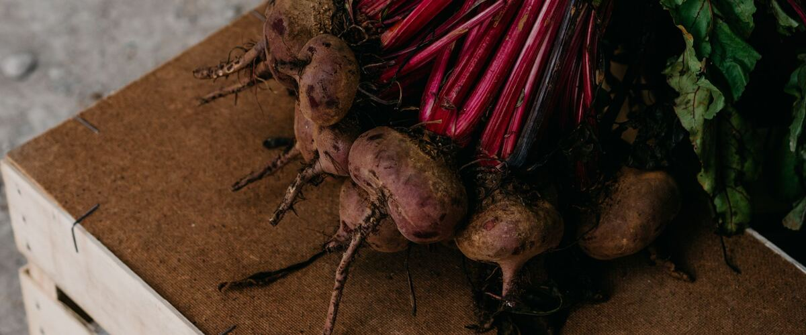

When to plant beets in Pendleton, OR
Plant beets from seed, directly in the garden in Pendleton, Apr 1 – May 27. For a fall harvest, plant again Aug 6–20.
- Difficulty
- Moderate
- Sun
- Full sun; tolerates light shade
- Spacing
- Thin to 3 inches apart
- Planting depth
- ½ inch deep
- Frost
- Handles light frost
- First harvest
- About 60 days after planting
Why these dates
Pendleton's typical last spring frost is April 26. As a cool-season crop that handles light frost, this crop doesn't need to wait for that date. In the Columbia Basin and low eastern valleys, though, the soil usually isn't ready to work until about April 1.
Columbia Basin and low eastern valleys. Hot, dry summers and quick spring warm-up. Warm crops go in earlier than west of the Cascades, and irrigation matters more than rain.
How to grow beets in Pendleton
- Prepare the bed: loosen the soil and mix in an inch or two of compost.
- Plant seeds Apr 1 – May 27, ½ inch deep, Thin to 3 inches apart.
- Keep the soil evenly moist until sprouts appear, which can take one to three weeks in cool soil.
- Plant again Aug 6–20 for a fall harvest.
- Harvest: Pull at golf ball to tennis ball size. The greens are edible too.
Key numbers
- 2–4Seeds per cluster
- 3 inchesThin to
- 6.0–7.5Soil pH
- 50–85°FSoil to sprout
- Golf to tennis ball sizePull at
- 2–4 months coldKeeps
How it works
The plant biology behind the advice above, in plain language.
One seed, several seedlings
A beet "seed" is actually a dried fruit cluster containing two to four seeds, so seedlings come up in small clumps. Thin to one plant every 3 inches once they're a couple of inches tall; crowded beets grow leaves instead of roots. Monogerm varieties have one seed per cluster and need less thinning.
Soil, pH and boron
Beets grow best in loose soil with a pH of about 6.0 to 7.5 and don't do well in acidic soil. They also need more boron than most vegetables. A shortage causes black, corky spots inside the root and dying leaf centers. If that's happened before, test the soil; if boron is low, add it in very small amounts, since too much is toxic to plants.
Temperature
Beet seeds sprout in soil from about 50 to 85°F. Plants grow best in cool weather. Beets are biennials, and a long cold spell after planting can make spring plantings bolt, so wait until the soil has warmed a bit. White rings inside the root usually come from fluctuating temperatures or heat stress and don't affect flavor much.
Water
Keep the soil evenly moist. Dry spells make roots woody and tough, and a sudden soak after drought can split them. A light mulch helps once seedlings are up.
Pests
Leaf miners tunnel through the leaves, leaving pale, papery blotches. Pick off affected leaves early and cover young plants with row cover. Slugs go after seedlings.
Harvest and storage
Pull beets at golf ball to tennis ball size, when they're most tender. Leave an inch of stem when trimming the tops so the roots don't bleed. The red color comes from betalains, water-soluble pigments that stain; golden beets are less messy. The greens are edible too. Stored cold and humid, in the fridge or a root cellar, trimmed beets keep two to four months.
Common questions
When is the last frost in Pendleton, OR?
Typically April 26. In 9 years out of 10, frost is over by May 10. These are 1991–2020 NOAA climate normals for Pendleton Airport.
Is it too late to plant beets in Pendleton?
The spring planting window runs through May 27. If you miss it, plant again for fall from August 6 to August 20.
How long until I can harvest beets?
About 60 days after planting. Pull at golf ball to tennis ball size. The greens are edible too.
Why do several beet seedlings grow from one seed?
Each beet "seed" is a cluster of two to four seeds. Thin to one plant every 3 inches, or grow monogerm varieties, which have one seed per cluster.
Why are my beets all leaves and no root?
Most often crowding: beets need about 3 inches each. Too much nitrogen, too much shade, or uneven watering can also cause it.
What are the black spots inside my beets?
Usually boron deficiency, which causes black, corky spots inside the root. Test your soil and, if boron is low, add a very small amount. Too much boron is toxic, so don't add it without testing.
Also plant in Pendleton around the same time
Planting dates for beets in nearby areas
- Baker City, OR Apr 27 – Jun 22
- The Dalles, OR Apr 1 – May 27
- Hood River, OR Apr 1 – May 27
- Hermiston, OR Apr 1 – May 27
- Ontario, OR Apr 1 – May 27
- La Grande, OR Apr 15 – Jun 10